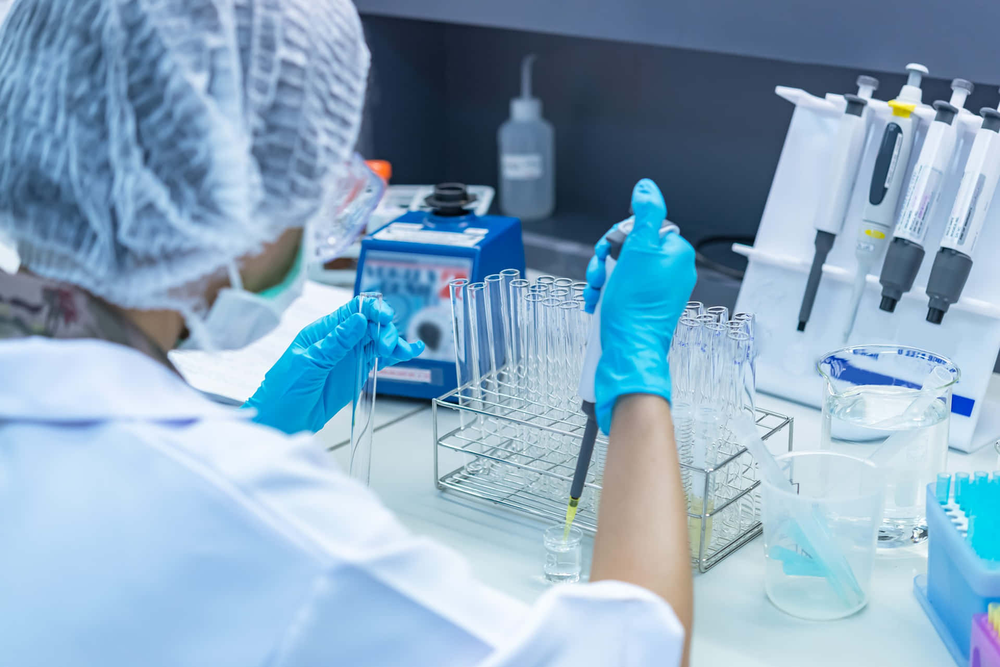
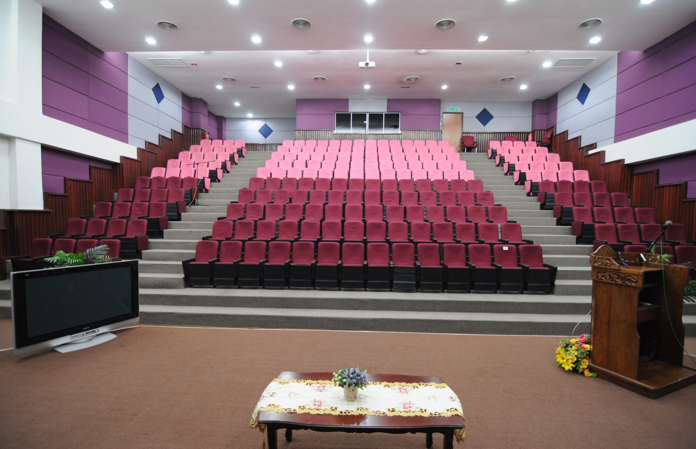
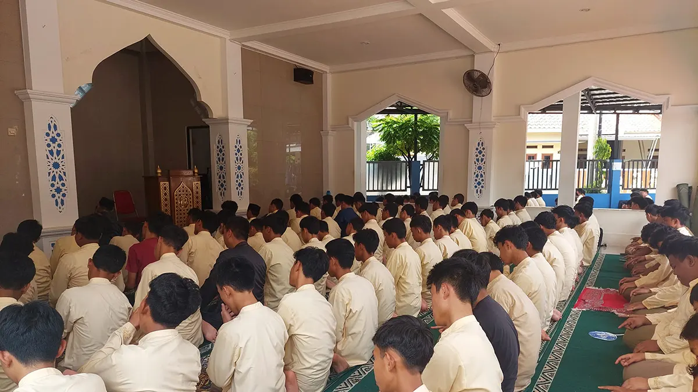
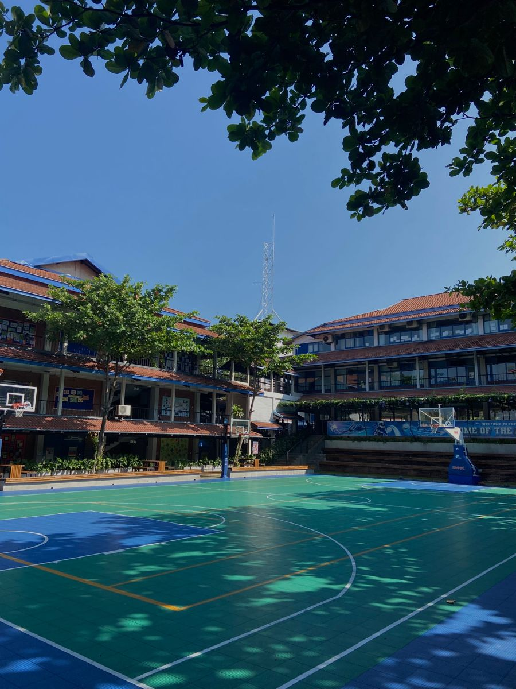

Universitas Safin hadir sebagai perguruan tinggi yang berkomitmen menghasilkan lulusan yang profesional, inovatif, dan siap menghadapi tantangan dunia kerja.
Dengan tenaga pengajar yang berpengalaman, fasilitas modern, serta kurikulum yang mengikuti perkembangan industri, kami siap mengantarkan mahasiswa menuju masa depan yang gemilang.
SelengkapnyaMahasiswa Aktif
Dosen Profesional
Program Studi
Tahun Berdiri
Pilih fakultas sesuai minat dan bakatmu untuk meraih masa depan yang lebih baik.
Informatika, Sistem Informasi, Teknologi Informasi.
Manajemen, Akuntansi, Bisnis Digital.
Keperawatan, Kebidanan, Farmasi.
Pendidikan Guru dan Ilmu Pendidikan.
Pilih program studi terbaik sesuai minat dan bakatmu.
Mempelajari teknologi, rekayasa, dan inovasi masa depan.
Mencetak lulusan yang unggul di bidang bisnis dan manajemen.
Menghasilkan lulusan yang profesional dan berintegritas.
Mengembangkan pertanian modern berbasis teknologi.
Fasilitas modern untuk mendukung kegiatan belajar mahasiswa.

Laboratorium lengkap dengan peralatan modern.
Koleksi buku lengkap dan ruang belajar nyaman.

Digunakan untuk seminar dan kegiatan akademik.

Tempat ibadah yang nyaman untuk seluruh civitas akademika.
Akses internet cepat di seluruh area kampus.

Mendukung berbagai kegiatan olahraga mahasiswa.
Kami siap membantu pertanyaan Anda.
📍 Jl. Raya Pati - Kudus
📞 (0295) 123456
✉ info@.ac.id